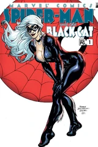
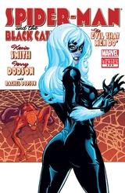
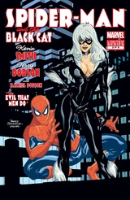
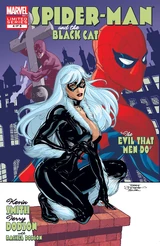
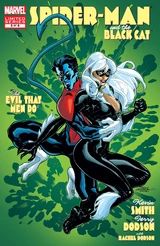
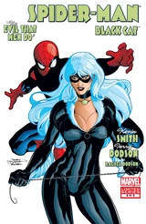

Spider-Man/Black Cat: The Evil That Men Do (2002 - 2006)
| Comic Book | Release Date | Cover |
|---|---|---|
| Spider-Man/Black Cat: The Evil That Men Do #1 The evil that men do Part 1: What's new pussycat? |  | |
| Spider-Man/Black Cat: The Evil That Men Do #2 The evil that men do Part 2: A ruse by any other name... |  | |
| Spider-Man/Black Cat: The Evil That Men Do #3 The evil that men do Part 3: Hate crimes |  | |
| Spider-Man/Black Cat: The Evil That Men Do #4 The evil that men do Part 4: A study in Scarlet |  | |
| Spider-Man/Black Cat: The Evil That Men Do #5 The evil that men do Part 5: Trickle down |  | |
| Spider-Man/Black Cat: The Evil That Men Do #6 The Evil That Men Do part 6: One In Four |  |